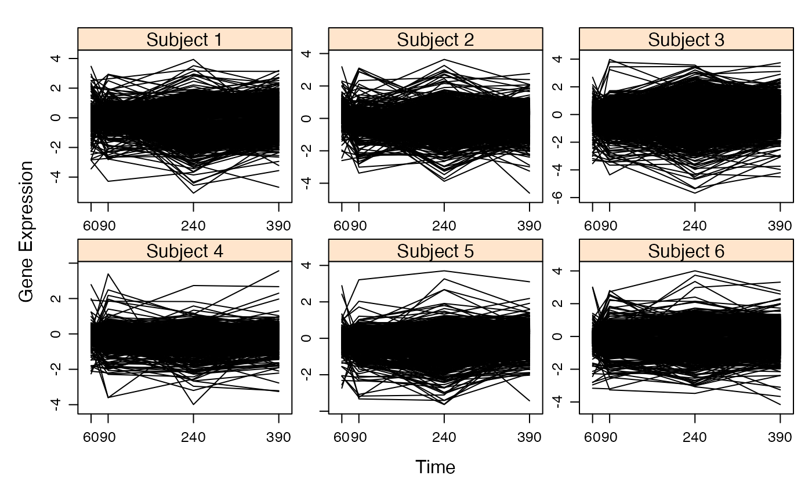
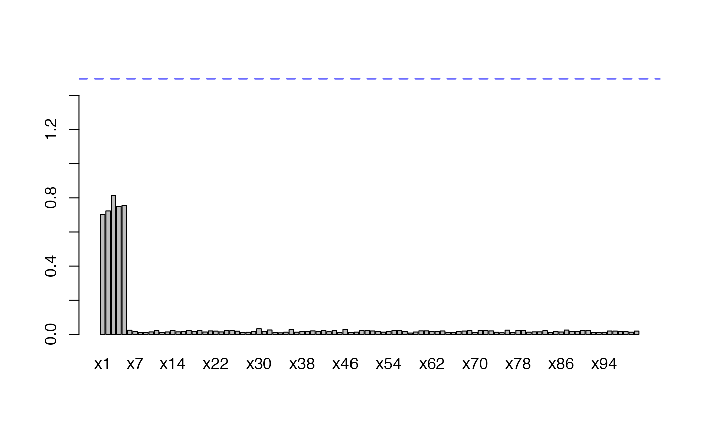
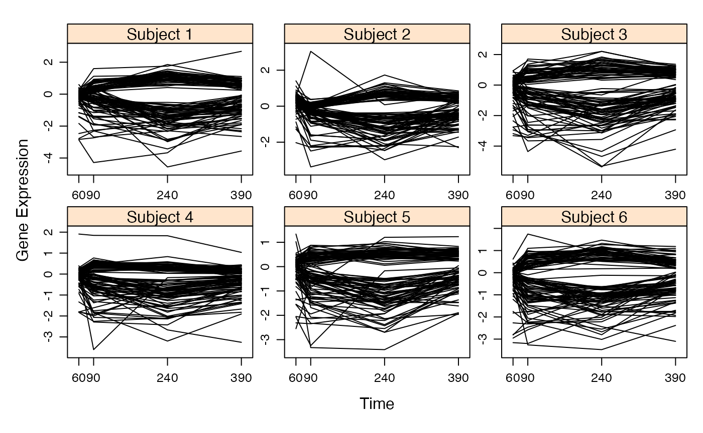
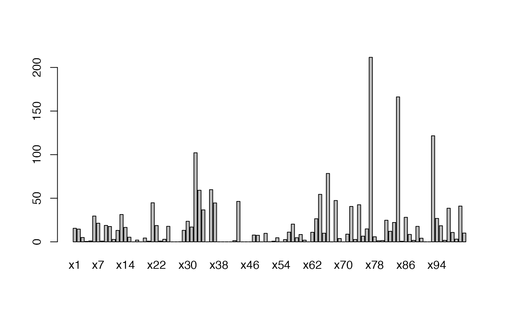

Simulation Tools Provided With the Selectboost Package
Frédéric Bertrand and Myriam Maumy-Bertrand
Université de Strasbourg and CNRSIRMA, labex IRMIAfrederic.bertrand@math.unistra.fr
2021-03-20
Source:vignettes/sim-with-sb.Rmd
sim-with-sb.RmdContents
This vignette details the simulations tools provided with the selectboost package by providing five examples of use.
If you are a Linux/Unix or a Macos user, you can install a version of SelectBoost with support for doMC from github with:
devtools::install_github("fbertran/SelectBoost", ref = "doMC")First example
Aim
We want to creates \(NDatasets=200\) datasets with \(\textrm{length}(group)=10\) variables and \(N=10\) observations. In that example we want \(9\) groups:
- \(x_1\) and \(x_{10}\) belong to the first group and the intra-group Pearson correlation for this group is equal to \(.95\),
- \(x_2\) belongs to the second group,
- \(x_3\) belongs to the third group,
- …
- \(x_9\) belongs to the ninth group.
Correlation structure
The correlation structure of the explanatory variables of the dataset is provided by group and the intra-group Pearson correlation value for each of the groups by cor_group. A value must be provided even for single variable groups and the number of variables is length of the group vector. Use the simulation_cor function to create the correlation matrix (CM).
library(SelectBoost)
group<-c(1:9,1) #10 variables
cor_group<-rep(0.95,9)
CM<-simulation_cor(group,cor_group)
CM
#> [,1] [,2] [,3] [,4] [,5] [,6] [,7] [,8] [,9] [,10]
#> [1,] 1.00 0 0 0 0 0 0 0 0 0.95
#> [2,] 0.00 1 0 0 0 0 0 0 0 0.00
#> [3,] 0.00 0 1 0 0 0 0 0 0 0.00
#> [4,] 0.00 0 0 1 0 0 0 0 0 0.00
#> [5,] 0.00 0 0 0 1 0 0 0 0 0.00
#> [6,] 0.00 0 0 0 0 1 0 0 0 0.00
#> [7,] 0.00 0 0 0 0 0 1 0 0 0.00
#> [8,] 0.00 0 0 0 0 0 0 1 0 0.00
#> [9,] 0.00 0 0 0 0 0 0 0 1 0.00
#> [10,] 0.95 0 0 0 0 0 0 0 0 1.00Explanatory dataset generation
Then generation of an explanatory dataset with \(N=10\) observations is made by the simulation_X function.
set.seed(3141)
N<-10
X<-simulation_X(N,CM)
X
#> [,1] [,2] [,3] [,4] [,5] [,6]
#> [1,] 0.69029599 -1.7343187 0.38993973 0.7530345 0.73462394 1.91645527
#> [2,] -0.55429733 1.5236359 -0.44435298 -0.8293970 0.02137105 1.62014297
#> [3,] -0.65277340 -0.2365804 -0.33365748 1.6144115 -1.38882044 1.18979400
#> [4,] 0.06979050 -0.1798988 -0.01576611 -1.6377538 -0.85286458 0.07352177
#> [5,] -0.58450206 -1.7411024 -0.13801223 -0.4512545 -0.14449068 -0.77910581
#> [6,] -1.26045088 0.2087882 -0.72491869 0.6856348 -0.43163916 -1.62517684
#> [7,] 0.03836372 0.4497529 -0.14266131 -0.6019886 1.36552523 0.14761767
#> [8,] -0.52083678 -0.7626927 0.12068723 -1.6146444 0.79777307 2.41326136
#> [9,] 0.30631735 0.9848562 -0.73193720 -1.2236526 -0.59785470 -0.13138414
#> [10,] -1.67366702 0.8709858 -0.80617294 -0.7559627 1.76655800 0.58235105
#> [,7] [,8] [,9] [,10]
#> [1,] 0.23481727 -0.2019611 -1.0254989 0.97524648
#> [2,] -0.11230652 1.7600720 1.4330532 -0.46696929
#> [3,] 1.80315380 -0.7423216 -0.3679811 -0.83315697
#> [4,] -0.30160066 0.6676371 2.0313025 -0.07749897
#> [5,] 0.04835639 0.8040776 -0.2039855 -0.75413152
#> [6,] 0.56503309 -0.1387350 -0.4091602 -1.09688456
#> [7,] 1.17868940 0.5279960 -0.5626160 -0.09706896
#> [8,] -1.64916614 -0.6481176 1.7608488 -0.69320924
#> [9,] -0.44649730 0.4507879 1.4486604 0.60032266
#> [10,] -1.48612450 0.1245139 -0.9288625 -1.10028291Response derivation
A response can now be added to the dataset by the simulation_Data function. We have to specifiy the support of the response, i.e. the explanatory variables that will be used in the linear model created to compute the response. The support is given by the supp vector whose entries are either \(0\) or \(1\). The length of the supp vector must be equal to the number of explanatory variables and if the \(i\)entry is equal to \(1\), it means that the \(i\)variable will be used to derive the response value, whereas if the \(i\)entry is equal to \(0\), it means that the \(i\)variable will not be used to derive the response value (beta<-rep(0,length(supp))). The values of the coefficients for the explanatory variables that are in the support of the response are random (either absolute value and sign) and given by beta[which(supp==1)]<-runif(sum(supp),minB,maxB)*(rbinom(sum(supp),1,.5)*2-1). Hence, the user can specify their minimal absolute value with the minB option and their maximal absolute value with the maxB option. The stn option is a scaling factor for the noise added to the response vector ((t(beta)%*%var(X)%*%beta)/stn, with X the matrix of explanatory variables). The higher the stn value, the smaller the noise: for instance for a given X dataset, an stn value \(\alpha\) times larger will result in a noise exactly \(\sqrt{\alpha}\) times smaller.
set.seed(3141)
supp<-c(1,1,1,0,0,0,0,0,0,0)
minB<-1
maxB<-2
stn<-50
firstdataset=simulation_DATA(X,supp,minB,maxB,stn)
firstdataset
#> $X
#> [,1] [,2] [,3] [,4] [,5] [,6]
#> [1,] 0.69029599 -1.7343187 0.38993973 0.7530345 0.73462394 1.91645527
#> [2,] -0.55429733 1.5236359 -0.44435298 -0.8293970 0.02137105 1.62014297
#> [3,] -0.65277340 -0.2365804 -0.33365748 1.6144115 -1.38882044 1.18979400
#> [4,] 0.06979050 -0.1798988 -0.01576611 -1.6377538 -0.85286458 0.07352177
#> [5,] -0.58450206 -1.7411024 -0.13801223 -0.4512545 -0.14449068 -0.77910581
#> [6,] -1.26045088 0.2087882 -0.72491869 0.6856348 -0.43163916 -1.62517684
#> [7,] 0.03836372 0.4497529 -0.14266131 -0.6019886 1.36552523 0.14761767
#> [8,] -0.52083678 -0.7626927 0.12068723 -1.6146444 0.79777307 2.41326136
#> [9,] 0.30631735 0.9848562 -0.73193720 -1.2236526 -0.59785470 -0.13138414
#> [10,] -1.67366702 0.8709858 -0.80617294 -0.7559627 1.76655800 0.58235105
#> [,7] [,8] [,9] [,10]
#> [1,] 0.23481727 -0.2019611 -1.0254989 0.97524648
#> [2,] -0.11230652 1.7600720 1.4330532 -0.46696929
#> [3,] 1.80315380 -0.7423216 -0.3679811 -0.83315697
#> [4,] -0.30160066 0.6676371 2.0313025 -0.07749897
#> [5,] 0.04835639 0.8040776 -0.2039855 -0.75413152
#> [6,] 0.56503309 -0.1387350 -0.4091602 -1.09688456
#> [7,] 1.17868940 0.5279960 -0.5626160 -0.09706896
#> [8,] -1.64916614 -0.6481176 1.7608488 -0.69320924
#> [9,] -0.44649730 0.4507879 1.4486604 0.60032266
#> [10,] -1.48612450 0.1245139 -0.9288625 -1.10028291
#>
#> $Y
#> [1] -4.2132936 3.5039588 0.3332549 -0.4924011 -2.5391834 1.8674007
#> [7] 0.6678607 -0.4589311 0.6353867 3.8091855
#>
#> $support
#> [1] 1 1 1 0 0 0 0 0 0 0
#>
#> $beta
#> [1] -1.754996 1.964992 1.041431 0.000000 0.000000 0.000000 0.000000
#> [8] 0.000000 0.000000 0.000000
#>
#> $stn
#> [1] 50
#>
#> $sigma
#> [,1]
#> [1,] 0.3493447
#>
#> attr(,"class")
#> [1] "simuls"Multiple datasets and checks
To generate multiple datasets, repeat steps 2 and 3, for instance use a for loop. We create \(NDatasets=200\) datasets and assign them to the objects DATA_exemple1_nb_1 to DATA_exemple1_nb_200.
set.seed(3141)
NDatasets=200
for(i in 1:NDatasets){
X<-simulation_X(N,CM)
assign(paste("DATA_exemple1_nb_",i,sep=""),simulation_DATA(X,supp,minB,maxB,stn))
}We now check the correlation structure of the explanatory variable. First we compute the mean correlation matrix.
corr_sum=matrix(0,length(group),length(group))
for(i in 1:NDatasets){
corr_sum=corr_sum+cor(get(paste("DATA_exemple1_nb_",i,sep=""))$X)
}
corr_mean=corr_sum/NDatasetsThen we display and plot that the mean correlation matrix.
corr_mean
#> [,1] [,2] [,3] [,4] [,5]
#> [1,] 1.0000000000 -0.0008611262 0.0193872629 0.0192496952 -0.012147407
#> [2,] -0.0008611262 1.0000000000 -0.0520800766 0.0144798781 0.006237499
#> [3,] 0.0193872629 -0.0520800766 1.0000000000 0.0008693002 -0.021373842
#> [4,] 0.0192496952 0.0144798781 0.0008693002 1.0000000000 0.007753693
#> [5,] -0.0121474071 0.0062374994 -0.0213738420 0.0077536931 1.000000000
#> [6,] -0.0089756967 -0.0404111300 0.0344817040 0.0081889675 0.018018674
#> [7,] -0.0082911544 0.0072612885 -0.0233188445 -0.0380192689 0.023833224
#> [8,] 0.0272233550 -0.0066654749 -0.0487035643 0.0172624295 0.043181249
#> [9,] -0.0145986545 0.0071146338 0.0364868095 -0.0020153080 -0.027733046
#> [10,] 0.9422544272 -0.0071281448 0.0264886880 0.0221950354 -0.003811061
#> [,6] [,7] [,8] [,9] [,10]
#> [1,] -0.008975697 -0.008291154 0.027223355 -0.014598655 0.942254427
#> [2,] -0.040411130 0.007261289 -0.006665475 0.007114634 -0.007128145
#> [3,] 0.034481704 -0.023318845 -0.048703564 0.036486809 0.026488688
#> [4,] 0.008188968 -0.038019269 0.017262430 -0.002015308 0.022195035
#> [5,] 0.018018674 0.023833224 0.043181249 -0.027733046 -0.003811061
#> [6,] 1.000000000 -0.015449494 -0.004054573 0.006159349 0.003444504
#> [7,] -0.015449494 1.000000000 -0.002105066 0.005052182 -0.018230902
#> [8,] -0.004054573 -0.002105066 1.000000000 -0.003169857 0.021688766
#> [9,] 0.006159349 0.005052182 -0.003169857 1.000000000 -0.013388952
#> [10,] 0.003444504 -0.018230902 0.021688766 -0.013388952 1.000000000
plot(abs(corr_mean))
coef_sum=rep(0,length(group))
names(coef_sum)<-paste("x",1:length(group),sep="")
error_counter=0
for(i in 1:NDatasets){
tempdf=data.frame(cbind(Y=get(paste("DATA_exemple1_nb_",i,sep=""))$Y,
get(paste("DATA_exemple1_nb_",i,sep=""))$X))
tempcoef=coef(lm(Y~.-1,data=tempdf))
if(is.null(tempcoef)){
cat("Error in lm fit, skip coefficients\n")
error_counter=error_counter+1
} else{
coef_sum=coef_sum+abs(tempcoef)
}
}
error_counter
#> [1] 0
coef_mean=coef_sum/NDatasetsAll fits were sucessful. Then we display and plot that the mean coefficient vector values.
coef_mean
#> x1 x2 x3 x4 x5 x6
#> 1.508327e+00 1.518967e+00 1.491694e+00 1.437883e-15 1.857978e-15 2.524863e-15
#> x7 x8 x9 x10
#> 1.848380e-15 2.314167e-15 2.601342e-15 6.269818e-15
barplot(coef_mean)
abline(h=(minB+maxB)/2,lwd=2,lty=2,col="blue")
Reduce the noise in the response for the new responses by a factor \(\sqrt{5000/50}=10\). \(1/stn\cdot \beta_{support}^t\mathrm{Var}(X)\beta_{support}\) where \(\beta_{support}\) is the vector of coefficients wh
set.seed(3141)
stn <- 5000
for(i in 1:NDatasets){
X<-simulation_X(N,CM)
assign(paste("DATA_exemple1_bis_nb_",i,sep=""),simulation_DATA(X,supp,minB,maxB,stn))
}Since it is the same explanatory dataset for response generation, we can compare the \(\sigma\) between those \(NDatasets=200\) datasets.
stn_ratios=rep(0,NDatasets)
for(i in 1:NDatasets){
stn_ratios[i]<-get(paste("DATA_exemple1_nb_",i,sep=""))$sigma/
get(paste("DATA_exemple1_bis_nb_",i,sep=""))$sigma
}
all(sapply(stn_ratios,all.equal,10))
#> [1] TRUEAll the ratios are equal to 10 as anticipated.
Since, the correlation structure is the same as before, we do not need to check it again. As befor, we infer the coefficients values of a linear model using the lm function.
coef_sum_bis=rep(0,length(group))
names(coef_sum_bis)<-paste("x",1:length(group),sep="")
error_counter_bis=0
for(i in 1:NDatasets){
tempdf=data.frame(cbind(Y=get(paste("DATA_exemple1_bis_nb_",i,sep=""))$Y,
get(paste("DATA_exemple1_bis_nb_",i,sep=""))$X))
tempcoef=coef(lm(Y~.-1,data=tempdf))
if(is.null(tempcoef)){
cat("Error in lm fit, skip coefficients\n")
error_counter_bis=error_counte_bisr+1
} else{
coef_sum_bis=coef_sum_bis+abs(tempcoef)
}
}
error_counter_bis
#> [1] 0
coef_mean_bis=coef_sum_bis/NDatasetsAll fits were sucessful. Then we display and plot that the mean coefficient vector values. As expected, the noise reduction enhances the retrieval of the true mean coefficient absolute values by the models.
coef_mean_bis
#> x1 x2 x3 x4 x5 x6
#> 1.508327e+00 1.518967e+00 1.491694e+00 1.437883e-15 1.857978e-15 2.524863e-15
#> x7 x8 x9 x10
#> 1.848380e-15 2.314167e-15 2.601342e-15 6.269818e-15
barplot(coef_mean_bis)
abline(h=(minB+maxB)/2,lwd=2,lty=2,col="blue")
The simulation process looks sucessfull. What are the confidence indices for those variables?
Second example
Aim
We want to creates \(NDatasets=200\) datasets with \(\textrm{length}(group)=50\) variables and \(N=20\) observations. In that example we want \(1\) group:
- \(x_1\), , \(x_{50}\) belong to the same group and the intra-group Pearson correlation for this group is equal to \(.5\).
- only the first five variables \(x_1\), , \(x_{5}\) are explanatory variables for the response.
Explanatory variables and response
set.seed(3141)
N<-20
supp<-c(1,1,1,1,1,rep(0,45))
minB<-1
maxB<-2
stn<-50
for(i in 1:200){
C<-simulation_cor(group,cor_group)
X<-simulation_X(N,C)
assign(paste("DATA_exemple2_nb_",i,sep=""),simulation_DATA(X,supp,minB,maxB,stn))
}Checks
We now check the correlation structure of the explanatory variable. First we compute the mean correlation matrix.
corr_sum=matrix(0,length(group),length(group))
for(i in 1:NDatasets){
corr_sum=corr_sum+cor(get(paste("DATA_exemple2_nb_",i,sep=""))$X)
}
corr_mean=corr_sum/NDatasetsThen we display and plot that the mean correlation matrix.
corr_mean[1:10,1:10]
#> [,1] [,2] [,3] [,4] [,5] [,6] [,7]
#> [1,] 1.0000000 0.4875195 0.4774265 0.4739869 0.4796578 0.4927521 0.4898313
#> [2,] 0.4875195 1.0000000 0.4750680 0.4940743 0.4842295 0.4988293 0.4937678
#> [3,] 0.4774265 0.4750680 1.0000000 0.4799584 0.4690139 0.4831884 0.4765315
#> [4,] 0.4739869 0.4940743 0.4799584 1.0000000 0.4990798 0.4995625 0.4928739
#> [5,] 0.4796578 0.4842295 0.4690139 0.4990798 1.0000000 0.4890548 0.4839137
#> [6,] 0.4927521 0.4988293 0.4831884 0.4995625 0.4890548 1.0000000 0.4980120
#> [7,] 0.4898313 0.4937678 0.4765315 0.4928739 0.4839137 0.4980120 1.0000000
#> [8,] 0.4786241 0.4904904 0.4871110 0.4799335 0.4807772 0.5015775 0.4766888
#> [9,] 0.4821186 0.4801270 0.4648431 0.4774361 0.4657147 0.4942747 0.4786140
#> [10,] 0.4875410 0.4690954 0.4669033 0.4832185 0.4781301 0.4873754 0.4825714
#> [,8] [,9] [,10]
#> [1,] 0.4786241 0.4821186 0.4875410
#> [2,] 0.4904904 0.4801270 0.4690954
#> [3,] 0.4871110 0.4648431 0.4669033
#> [4,] 0.4799335 0.4774361 0.4832185
#> [5,] 0.4807772 0.4657147 0.4781301
#> [6,] 0.5015775 0.4942747 0.4873754
#> [7,] 0.4766888 0.4786140 0.4825714
#> [8,] 1.0000000 0.4783224 0.4832658
#> [9,] 0.4783224 1.0000000 0.4769654
#> [10,] 0.4832658 0.4769654 1.0000000
plot(abs(corr_mean))
coef_sum=rep(0,length(group))
coef_lasso_sum=rep(0,length(group))
names(coef_sum)<-paste("x",1:length(group),sep="")
names(coef_lasso_sum)<-paste("x",1:length(group),sep="")
error_counter=0
for(i in 1:NDatasets){
tempdf=data.frame(cbind(Y=get(paste("DATA_exemple2_nb_",i,sep=""))$Y,
get(paste("DATA_exemple2_nb_",i,sep=""))$X))
tempcoef=coef(lm(Y~.-1,data=tempdf))
require(lars)
lasso.1 <- lars::lars(x=get(paste("DATA_exemple2_nb_",i,sep=""))$X,
y=get(paste("DATA_exemple2_nb_",i,sep=""))$Y, type="lasso",
trace=FALSE, normalize=FALSE, intercept = FALSE)
# cv.lars() uses crossvalidation to estimate optimal position in path
cv.lasso.1 <- lars::cv.lars(x=get(paste("DATA_exemple2_nb_",i,sep=""))$X,
y=get(paste("DATA_exemple2_nb_",i,sep=""))$Y,
plot.it=FALSE, type="lasso")
# Use the "+1SE rule" to find best model:
# Take the min CV and add its SE ("limit").
# Find smallest model that has its own CV within this limit (at "s.cv.1")
limit <- min(cv.lasso.1$cv) + cv.lasso.1$cv.error[which.min(cv.lasso.1$cv)]
s.cv.1 <- cv.lasso.1$index[min(which(cv.lasso.1$cv < limit))]
# Print out coefficients at optimal s.
coef_lasso_sum=coef_lasso_sum+abs(coef(lasso.1, s=s.cv.1, mode="fraction"))
if(is.null(tempcoef)){
cat("Error in lm fit, skip coefficients\n")
error_counter=error_counter+1
} else{
coef_sum=coef_sum+abs(tempcoef)
}
}
error_counter
#> [1] 0
coef_mean=coef_sum/NDatasets
coef_lasso_mean=coef_lasso_sum/NDatasetsWith regular least squares and lasso estimators all fits were sucessful, yet only 20 variables coefficients could be estimated with regular least squares estimates for the linear model. Then we display and plot that the mean coefficient vector values for the least squares estimates.
coef_mean
#> x1 x2 x3 x4 x5 x6
#> 1.500084e+00 1.492942e+00 1.496050e+00 1.528043e+00 1.497537e+00 2.577168e-15
#> x7 x8 x9 x10 x11 x12
#> 6.820231e-15 3.386509e-15 4.297997e-15 7.216331e-15 3.528058e-15 1.001056e-14
#> x13 x14 x15 x16 x17 x18
#> 6.068207e-15 9.640427e-15 5.351262e-15 9.276245e-15 5.295417e-15 8.227904e-15
#> x19 x20 x21 x22 x23 x24
#> 5.860229e-15 4.724224e-15 NA NA NA NA
#> x25 x26 x27 x28 x29 x30
#> NA NA NA NA NA NA
#> x31 x32 x33 x34 x35 x36
#> NA NA NA NA NA NA
#> x37 x38 x39 x40 x41 x42
#> NA NA NA NA NA NA
#> x43 x44 x45 x46 x47 x48
#> NA NA NA NA NA NA
#> x49 x50
#> NA NA
barplot(coef_mean)
abline(h=(minB+maxB)/2,lwd=2,lty=2,col="blue")
coef_lasso_mean
#> x1 x2 x3 x4 x5 x6
#> 1.040812405 1.024444248 1.065905971 1.058866701 0.996624348 0.007811962
#> x7 x8 x9 x10 x11 x12
#> 0.015952857 0.010284528 0.025145014 0.019259508 0.014825470 0.023340488
#> x13 x14 x15 x16 x17 x18
#> 0.015909217 0.013040568 0.012039290 0.007597800 0.009091856 0.016135853
#> x19 x20 x21 x22 x23 x24
#> 0.006510554 0.017700262 0.024024125 0.026401587 0.016510921 0.006350005
#> x25 x26 x27 x28 x29 x30
#> 0.015389373 0.013108940 0.022619351 0.008526745 0.003851395 0.026688493
#> x31 x32 x33 x34 x35 x36
#> 0.013608283 0.010260901 0.019494725 0.008485431 0.008627058 0.019809449
#> x37 x38 x39 x40 x41 x42
#> 0.015047270 0.007562486 0.005826465 0.008270178 0.009596887 0.016556957
#> x43 x44 x45 x46 x47 x48
#> 0.014522021 0.016432803 0.003504785 0.008892051 0.012878671 0.011623352
#> x49 x50
#> 0.004653053 0.010384327
barplot(coef_lasso_mean,ylim=c(0,1.5))
abline(h=(minB+maxB)/2,lwd=2,lty=2,col="blue")
The simulation process looks sucessfull: the lasso estimates retrives mostly the correct variables, yet the other ones are also selected sometimes. What are the confidence indices for those variables?
Third Example
Aim
We want to creates \(NDatasets=200\) datasets with \(\textrm{length}(supp)=100\) variables and \(N=24\) observations. In that example we use real data for the X variables that we sample from all the \(1650\) probesets that are differentially expressed between the two conditions US and S. The main interest of that simulation is that the correlation structure of the X dataset will be a real one.
Data and response generations
First retrieve the datasets and get the differentially expressed probesets. Run the code to get additionnal plots.
require(CascadeData)
data(micro_S)
data(micro_US)
require(Cascade)
micro_US<-as.micro_array(micro_US,c(60,90,240,390),6)
micro_S<-as.micro_array(micro_S,c(60,90,240,390),6)
S<-geneSelection(list(micro_S,micro_US),list("condition",c(1,2),1),-1)
Sel<-micro_S@microarray[S@name,]
summary(S)
#> N1_US_T60 N1_US_T90 N1_US_T210 N1_US_T390
#> Min. :-3.445442 Min. :-4.28468 Min. :-5.08296 Min. :-4.68431
#> 1st Qu.:-0.142287 1st Qu.:-0.07960 1st Qu.:-0.78755 1st Qu.:-0.62401
#> Median :-0.033095 Median : 0.10331 Median : 0.39450 Median : 0.32171
#> Mean :-0.002321 Mean : 0.07994 Mean : 0.04299 Mean : 0.08204
#> 3rd Qu.: 0.110515 3rd Qu.: 0.28131 3rd Qu.: 0.78988 3rd Qu.: 0.66365
#> Max. : 3.471966 Max. : 2.93563 Max. : 3.93893 Max. : 3.18762
#> N2_US_T60 N2_US_T90 N2_US_T210 N2_US_T390
#> Min. :-2.6027 Min. :-3.37588 Min. :-3.87950 Min. :-4.61130
#> 1st Qu.: 0.1760 1st Qu.:-0.22368 1st Qu.:-0.51207 1st Qu.:-0.36024
#> Median : 0.3461 Median :-0.09522 Median : 0.25689 Median : 0.22635
#> Mean : 0.3528 Mean :-0.11100 Mean : 0.03797 Mean : 0.03828
#> 3rd Qu.: 0.5404 3rd Qu.: 0.02934 3rd Qu.: 0.57309 3rd Qu.: 0.43864
#> Max. : 3.1862 Max. : 3.10336 Max. : 3.63905 Max. : 2.76737
#> N3_US_T60 N3_US_T90 N3_US_T210 N3_US_T390
#> Min. :-3.550140 Min. :-4.36036 Min. :-5.67972 Min. :-4.5060
#> 1st Qu.:-0.146245 1st Qu.:-0.12487 1st Qu.:-1.15095 1st Qu.:-0.4787
#> Median : 0.017224 Median : 0.11684 Median : 0.27993 Median : 0.4759
#> Mean :-0.002654 Mean : 0.01882 Mean :-0.06901 Mean : 0.2070
#> 3rd Qu.: 0.185573 3rd Qu.: 0.29070 3rd Qu.: 0.80863 3rd Qu.: 0.7967
#> Max. : 2.692240 Max. : 3.98065 Max. : 3.56704 Max. : 3.7395
#> N4_US_T60 N4_US_T90 N4_US_T210 N4_US_T390
#> Min. :-2.25607 Min. :-3.60640 Min. :-3.99245 Min. :-3.25596
#> 1st Qu.:-0.10098 1st Qu.:-0.03933 1st Qu.:-0.44414 1st Qu.:-0.28561
#> Median :-0.02510 Median : 0.10412 Median : 0.05968 Median : 0.01639
#> Mean :-0.04386 Mean : 0.03840 Mean :-0.12505 Mean :-0.07290
#> 3rd Qu.: 0.04279 3rd Qu.: 0.21634 3rd Qu.: 0.24426 3rd Qu.: 0.17245
#> Max. : 2.78691 Max. : 3.39207 Max. : 2.73437 Max. : 3.56718
#> N5_US_T60 N5_US_T90 N5_US_T210 N5_US_T390
#> Min. :-2.734367 Min. :-3.32569 Min. :-3.63519 Min. :-3.42995
#> 1st Qu.: 0.007341 1st Qu.:-0.13749 1st Qu.:-0.53121 1st Qu.:-0.23822
#> Median : 0.120659 Median : 0.02666 Median : 0.18888 Median : 0.24203
#> Mean : 0.082653 Mean :-0.03708 Mean :-0.06209 Mean : 0.09684
#> 3rd Qu.: 0.210589 3rd Qu.: 0.14035 3rd Qu.: 0.41754 3rd Qu.: 0.43804
#> Max. : 2.890372 Max. : 3.21219 Max. : 3.70482 Max. : 3.10234
#> N6_US_T60 N6_US_T90 N6_US_T210 N6_US_T390
#> Min. :-3.160354 Min. :-3.261297 Min. :-3.47610 Min. :-4.15575
#> 1st Qu.:-0.093522 1st Qu.:-0.151623 1st Qu.:-0.62330 1st Qu.:-0.44959
#> Median :-0.006127 Median : 0.068895 Median : 0.37171 Median : 0.23296
#> Mean :-0.031932 Mean : 0.005802 Mean : 0.06757 Mean : 0.05379
#> 3rd Qu.: 0.075654 3rd Qu.: 0.238649 3rd Qu.: 0.66546 3rd Qu.: 0.49867
#> Max. : 3.011000 Max. : 2.803360 Max. : 4.00612 Max. : 3.31323
plot(S)
Generates the datasets sampling for each of them 100 probesets expressions among the 1650 that were selected and linking the response to the expressions of the first five probesets.
Checks
Here are the plots of an example of correlation structure, namely for DATA_exemple3_nb_200$X. Run the code to get the graphics.
coef_sum=rep(0,length(supp))
coef_lasso_sum=rep(0,length(supp))
names(coef_sum)<-paste("x",1:length(supp),sep="")
names(coef_lasso_sum)<-paste("x",1:length(supp),sep="")
error_counter=0
for(i in 1:NDatasets){
tempdf=data.frame(cbind(Y=get(paste("DATA_exemple3_nb_",i,sep=""))$Y,
get(paste("DATA_exemple3_nb_",i,sep=""))$X))
tempcoef=coef(lm(Y~.-1,data=tempdf))
require(lars)
lasso.1 <- lars::lars(x=get(paste("DATA_exemple3_nb_",i,sep=""))$X,
y=get(paste("DATA_exemple3_nb_",i,sep=""))$Y, type="lasso",
trace=FALSE, normalize=FALSE, intercept = FALSE)
# cv.lars() uses crossvalidation to estimate optimal position in path
cv.lasso.1 <- lars::cv.lars(x=get(paste("DATA_exemple3_nb_",i,sep=""))$X,
y=get(paste("DATA_exemple3_nb_",i,sep=""))$Y,
plot.it=FALSE, normalize=FALSE, intercept = FALSE, type="lasso")
# Use the "+1SE rule" to find best model:
# Take the min CV and add its SE ("limit").
# Find smallest model that has its own CV within this limit (at "s.cv.1")
limit <- min(cv.lasso.1$cv) + cv.lasso.1$cv.error[which.min(cv.lasso.1$cv)]
s.cv.1 <- cv.lasso.1$index[min(which(cv.lasso.1$cv < limit))]
# Print out coefficients at optimal s.
coef_lasso_sum=coef_lasso_sum+abs(coef(lasso.1, s=s.cv.1, mode="fraction"))
if(is.null(tempcoef)){
cat("Error in lm fit, skip coefficients\n")
error_counter=error_counter+1
} else{
coef_sum=coef_sum+abs(tempcoef)
}
}
error_counter
#> [1] 0
coef_mean=coef_sum/NDatasets
coef_lasso_mean=coef_lasso_sum/NDatasetsWith regular least squares and lasso estimators all fits were sucessful, yet only 20 variables coefficients could be estimated with regular least squares estimates for the linear model. Then we display and plot that the mean coefficient vector values for the least squares estimates.
coef_mean
#> x1 x2 x3 x4 x5 x6
#> 1.457741e+00 1.488627e+00 1.503719e+00 1.506939e+00 1.481887e+00 1.463622e-14
#> x7 x8 x9 x10 x11 x12
#> 1.250379e-14 1.241973e-14 1.154723e-14 9.181216e-15 1.426020e-14 1.400520e-14
#> x13 x14 x15 x16 x17 x18
#> 1.376739e-14 1.075624e-14 1.417228e-14 1.173325e-14 1.083780e-14 1.541663e-14
#> x19 x20 x21 x22 x23 x24
#> 1.311993e-14 1.272276e-14 1.255378e-14 9.132597e-15 1.242458e-14 1.161036e-14
#> x25 x26 x27 x28 x29 x30
#> NA NA NA NA NA NA
#> x31 x32 x33 x34 x35 x36
#> NA NA NA NA NA NA
#> x37 x38 x39 x40 x41 x42
#> NA NA NA NA NA NA
#> x43 x44 x45 x46 x47 x48
#> NA NA NA NA NA NA
#> x49 x50 x51 x52 x53 x54
#> NA NA NA NA NA NA
#> x55 x56 x57 x58 x59 x60
#> NA NA NA NA NA NA
#> x61 x62 x63 x64 x65 x66
#> NA NA NA NA NA NA
#> x67 x68 x69 x70 x71 x72
#> NA NA NA NA NA NA
#> x73 x74 x75 x76 x77 x78
#> NA NA NA NA NA NA
#> x79 x80 x81 x82 x83 x84
#> NA NA NA NA NA NA
#> x85 x86 x87 x88 x89 x90
#> NA NA NA NA NA NA
#> x91 x92 x93 x94 x95 x96
#> NA NA NA NA NA NA
#> x97 x98 x99 x100
#> NA NA NA NA
barplot(coef_mean)
abline(h=(minB+maxB)/2,lwd=2,lty=2,col="blue")
coef_lasso_mean
#> x1 x2 x3 x4 x5 x6
#> 0.698583469 0.720189491 0.810630146 0.746442403 0.754771512 0.024361345
#> x7 x8 x9 x10 x11 x12
#> 0.015683388 0.010592875 0.011885616 0.014096938 0.020929967 0.011745083
#> x13 x14 x15 x16 x17 x18
#> 0.013956787 0.022074586 0.014456640 0.015433682 0.023909028 0.016518641
#> x19 x20 x21 x22 x23 x24
#> 0.021327747 0.013615245 0.019931987 0.018892285 0.014078848 0.023451766
#> x25 x26 x27 x28 x29 x30
#> 0.021579606 0.018488386 0.012237622 0.013068995 0.016606079 0.032710099
#> x31 x32 x33 x34 x35 x36
#> 0.017221981 0.025553452 0.011455537 0.007588747 0.012503354 0.027990603
#> x37 x38 x39 x40 x41 x42
#> 0.012712409 0.017015175 0.015938244 0.020113071 0.015363207 0.021779451
#> x43 x44 x45 x46 x47 x48
#> 0.015301467 0.023310117 0.009375730 0.028538708 0.010643011 0.012912658
#> x49 x50 x51 x52 x53 x54
#> 0.021113253 0.022101301 0.019696163 0.017486521 0.012797403 0.017481204
#> x55 x56 x57 x58 x59 x60
#> 0.021883771 0.020960943 0.017542692 0.007463007 0.014400504 0.020531679
#> x61 x62 x63 x64 x65 x66
#> 0.020290916 0.017386233 0.015440217 0.019908764 0.011650804 0.012215833
#> x67 x68 x69 x70 x71 x72
#> 0.017173039 0.019222570 0.022233419 0.012291879 0.023242248 0.021103892
#> x73 x74 x75 x76 x77 x78
#> 0.019976721 0.012413973 0.009042247 0.024407614 0.011496152 0.022203795
#> x79 x80 x81 x82 x83 x84
#> 0.024014558 0.012821418 0.014332526 0.014655681 0.020962653 0.010708244
#> x85 x86 x87 x88 x89 x90
#> 0.016612993 0.013674264 0.025079440 0.018041856 0.016141391 0.023882556
#> x91 x92 x93 x94 x95 x96
#> 0.023810103 0.011696891 0.010349792 0.011900366 0.019443916 0.019066927
#> x97 x98 x99 x100
#> 0.016225119 0.016061081 0.012684836 0.018997083
barplot(coef_lasso_mean,ylim=c(0,1.5))
abline(h=(minB+maxB)/2,lwd=2,lty=2,col="blue")
The simulation process looks sucessfull: the lasso estimates retrives mostly the correct variables, yet the other ones are also selected sometimes. What are the confidence indices for those variables?
Fourth Example
Aim
We want to creates \(NDatasets=101\) datasets with \(\textrm{length}(supp)=100\) variables and \(N=18\) observations. In that example we use real data for the variables that are the \(101\) probesets that are the more differentially expressed between the two conditions US and S. We create \(101\) datasets by leaving one of the variables out each time and using it as the response that shall be predicted. We also only use for the explanatory variables the observations that are the measurements for the 1st, 2nd and 3rd timepoints and for the responses the observations that are the measurements of the same variables for the 2nd, 3rd and 4th timepoints. The main interest of that simulation is that the correlation structure of the X dataset will be a real one and that it is a typical setting for cascade network reverse-engineering in genomics or proteomics, see the Cascade package for more details.
Data and response generations
First retrieve the datasets and get the differentially expressed probesets. Run the code to get additionnal plots.
require(CascadeData)
data(micro_S)
data(micro_US)
require(Cascade)
micro_US<-as.micro_array(micro_US,c(60,90,240,390),6)
micro_S<-as.micro_array(micro_S,c(60,90,240,390),6)
S<-geneSelection(list(micro_S,micro_US),list("condition",c(1,2),1),101)
Sel<-micro_S@microarray[S@name,]
summary(S)
#> N1_US_T60 N1_US_T90 N1_US_T210 N1_US_T390
#> Min. :-2.86440 Min. :-4.2847 Min. :-4.5591 Min. :-3.5620
#> 1st Qu.:-0.27855 1st Qu.:-0.5322 1st Qu.:-1.5662 1st Qu.:-1.0324
#> Median :-0.11420 Median : 0.0229 Median :-0.8926 Median :-0.3158
#> Mean :-0.25760 Mean :-0.2284 Mean :-0.4651 Mean :-0.2925
#> 3rd Qu.: 0.03457 3rd Qu.: 0.3970 3rd Qu.: 1.0840 3rd Qu.: 0.6128
#> Max. : 0.59866 Max. : 1.5979 Max. : 1.8577 Max. : 2.6810
#> N2_US_T60 N2_US_T90 N2_US_T210 N2_US_T390
#> Min. :-2.0267 Min. :-3.37588 Min. :-2.9783 Min. :-2.3026
#> 1st Qu.: 0.1515 1st Qu.:-0.44572 1st Qu.:-1.2720 1st Qu.:-0.6091
#> Median : 0.3207 Median :-0.19104 Median :-0.6199 Median :-0.1629
#> Mean : 0.2513 Mean :-0.34924 Mean :-0.4245 Mean :-0.1582
#> 3rd Qu.: 0.5239 3rd Qu.: 0.01764 3rd Qu.: 0.6264 3rd Qu.: 0.4601
#> Max. : 1.4069 Max. : 3.04749 Max. : 1.7326 Max. : 0.8499
#> N3_US_T60 N3_US_T90 N3_US_T210 N3_US_T390
#> Min. :-3.31723 Min. :-4.3604 Min. :-5.3671 Min. :-4.2055
#> 1st Qu.:-0.49979 1st Qu.:-1.2628 1st Qu.:-1.9470 1st Qu.:-1.0143
#> Median :-0.06299 Median :-0.4540 Median :-1.0742 Median :-0.3669
#> Mean :-0.29855 Mean :-0.5145 Mean :-0.6951 Mean :-0.2288
#> 3rd Qu.: 0.22531 3rd Qu.: 0.5196 3rd Qu.: 1.0217 3rd Qu.: 0.8482
#> Max. : 0.94585 Max. : 1.7065 Max. : 2.2100 Max. : 1.3611
#> N4_US_T60 N4_US_T90 N4_US_T210 N4_US_T390
#> Min. :-1.82903 Min. :-3.6064 Min. :-3.1968 Min. :-3.2560
#> 1st Qu.:-0.20932 1st Qu.:-0.6953 1st Qu.:-1.0210 1st Qu.:-0.6339
#> Median :-0.05962 Median :-0.1442 Median :-0.4632 Median :-0.2058
#> Mean :-0.15230 Mean :-0.2774 Mean :-0.5000 Mean :-0.3218
#> 3rd Qu.: 0.03940 3rd Qu.: 0.4080 3rd Qu.: 0.2534 3rd Qu.: 0.1055
#> Max. : 1.90954 Max. : 1.8458 Max. : 1.8281 Max. : 1.0341
#> N5_US_T60 N5_US_T90 N5_US_T210 N5_US_T390
#> Min. :-2.54975 Min. :-3.3257 Min. :-3.4105 Min. :-1.9624
#> 1st Qu.:-0.20984 1st Qu.:-0.7611 1st Qu.:-1.3906 1st Qu.:-0.6373
#> Median : 0.08285 Median :-0.2723 Median :-0.6157 Median :-0.1902
#> Mean :-0.10242 Mean :-0.3500 Mean :-0.5298 Mean :-0.1621
#> 3rd Qu.: 0.23124 3rd Qu.: 0.3838 3rd Qu.: 0.5024 3rd Qu.: 0.4586
#> Max. : 1.33829 Max. : 0.8780 Max. : 1.2040 Max. : 1.2305
#> N6_US_T60 N6_US_T90 N6_US_T210 N6_US_T390
#> Min. :-3.16035 Min. :-3.2613 Min. :-3.4761 Min. :-3.1015
#> 1st Qu.:-0.41977 1st Qu.:-1.1226 1st Qu.:-1.3108 1st Qu.:-0.7930
#> Median :-0.09151 Median :-0.3160 Median :-0.7274 Median :-0.2896
#> Mean :-0.30570 Mean :-0.4130 Mean :-0.4159 Mean :-0.2531
#> 3rd Qu.: 0.08889 3rd Qu.: 0.4766 3rd Qu.: 0.8294 3rd Qu.: 0.4834
#> Max. : 0.61310 Max. : 1.7452 Max. : 1.4716 Max. : 1.1834
plot(S)
suppt<-rep(1:4,6)
supp<-c(1,1,1,1,1,rep(0,95)) #not used since we use one of the probeset expressions as response
minB<-1 #not used since we use one of the probeset expressions as response
maxB<-2 #not used since we use one of the probeset expressions as response
stn<-50 #not used since we use one of the probeset expressions as response
NDatasets<-101
set.seed(3141)
for(i in 1:NDatasets){
#the explanatory variables are the values for the 1st, 2nd and 3rd timepoints
X<-t(as.matrix(Sel[-i,suppt!=4]))
Xnorm<-t(t(X)/sqrt(colSums(X*X)))
DATA<-simulation_DATA(Xnorm,supp,minB,maxB,stn)
#the reponses are the values for the 2nd, 3rd and 4th timepoints
DATA$Y<-as.vector(t(Sel[i,suppt!=1]))
assign(paste("DATA_exemple4_nb_",i,sep=""),DATA)
rm(DATA)
}Checks
Here are the plots of an example of correlation structure, namely for DATA_exemple3_nb_200$X. Run the code to get the graphics.
coef_sum=rep(0,length(supp)+1)
coef_lasso_sum=rep(0,length(supp)+1)
names(coef_sum)<-paste("x",1:(length(supp)+1),sep="")
names(coef_lasso_sum)<-paste("x",1:(length(supp)+1),sep="")
error_counter=0
for(i in 1:NDatasets){
tempdf=data.frame(cbind(Y=get(paste("DATA_exemple4_nb_",i,sep=""))$Y,
get(paste("DATA_exemple4_nb_",i,sep=""))$X))
tempcoef=coef(lm(Y~.-1,data=tempdf))
require(lars)
lasso.1 <- lars::lars(x=get(paste("DATA_exemple4_nb_",i,sep=""))$X,
y=get(paste("DATA_exemple4_nb_",i,sep=""))$Y, type="lasso",
trace=FALSE, normalize=FALSE, intercept = FALSE)
# cv.lars() uses crossvalidation to estimate optimal position in path
cv.lasso.1 <- lars::cv.lars(x=get(paste("DATA_exemple4_nb_",i,sep=""))$X,
y=get(paste("DATA_exemple4_nb_",i,sep=""))$Y,
plot.it=FALSE, normalize=FALSE, intercept = FALSE, type="lasso")
# Use the "+1SE rule" to find best model:
# Take the min CV and add its SE ("limit").
# Find smallest model that has its own CV within this limit (at "s.cv.1")
limit <- min(cv.lasso.1$cv) + cv.lasso.1$cv.error[which.min(cv.lasso.1$cv)]
s.cv.1 <- cv.lasso.1$index[min(which(cv.lasso.1$cv < limit))]
# Print out coefficients at optimal s.
coef_lasso_sum[-i]=coef_lasso_sum[-i]+abs(coef(lasso.1, s=s.cv.1, mode="fraction"))
if(is.null(tempcoef)){
cat("Error in lm fit, skip coefficients\n")
error_counter=error_counter+1
} else{
coef_sum[-i]=coef_sum[-i]+abs(tempcoef)
}
}
error_counter
#> [1] 0
coef_mean=coef_sum/NDatasets
coef_lasso_mean=coef_lasso_sum/NDatasetsWith regular least squares and lasso estimators all fits were sucessful, yet only 20 variables coefficients could be estimated with regular least squares estimates for the linear model. Then we display and plot that the mean coefficient vector values for the least squares estimates.
head(coef_mean, 40)
#> x1 x2 x3 x4 x5 x6 x7 x8
#> 2248.272 2853.555 1621.780 3766.243 3261.185 2951.494 2532.662 1849.877
#> x9 x10 x11 x12 x13 x14 x15 x16
#> 7123.990 4535.791 4758.085 2069.225 1517.617 5293.455 1503.779 1328.183
#> x17 x18 x19 x20 x21 x22 x23 x24
#> 7760.637 2140.740 NA NA NA NA NA NA
#> x25 x26 x27 x28 x29 x30 x31 x32
#> NA NA NA NA NA NA NA NA
#> x33 x34 x35 x36 x37 x38 x39 x40
#> NA NA NA NA NA NA NA NA
barplot(coef_mean)
abline(h=(minB+maxB)/2,lwd=2,lty=2,col="blue")
head(coef_lasso_mean, 40)
#> x1 x2 x3 x4 x5 x6
#> 15.54572730 14.58227728 4.95845727 0.46353875 1.00330697 29.55699720
#> x7 x8 x9 x10 x11 x12
#> 21.34444981 0.83829989 18.81081187 17.57661299 2.75710443 13.09893938
#> x13 x14 x15 x16 x17 x18
#> 31.33928841 16.54387748 5.30914304 0.00000000 1.99138104 0.00000000
#> x19 x20 x21 x22 x23 x24
#> 4.35699583 0.75449031 44.78090867 18.67703579 0.92835303 2.91925792
#> x25 x26 x27 x28 x29 x30
#> 17.77204643 0.00000000 0.00000000 0.06240116 13.18244817 23.56341540
#> x31 x32 x33 x34 x35 x36
#> 16.98378204 102.13843333 59.14623441 36.64445640 0.00000000 59.82919657
#> x37 x38 x39 x40
#> 44.57764098 0.00000000 0.00000000 0.00000000
barplot(coef_lasso_mean)
Some probesets seem explanatory for many other ones (=hubs). What are the confidence indices for those variables?
Fifth Example
Aim
We want to creates \(NDatasets=200\) datasets with \(\textrm{length}(group)=500\) variables and \(N=25\) observations. In that example we want \(1\) group:
- \(x_1\), , \(x_{500}\) belong to the same group and the intra-group Pearson correlation for this group is equal to \(.5\).
- only the first five variables \(x_1\), , \(x_{5}\) are explanatory variables for the response.
Explanatory variables and response
set.seed(3141)
N<-25
supp<-c(1,1,1,1,1,rep(0,495))
minB<-1
maxB<-2
stn<-50
for(i in 1:NDatasets){
C<-simulation_cor(group,cor_group)
X<-simulation_X(N,C)
assign(paste("DATA_exemple5_nb_",i,sep=""),simulation_DATA(X,supp,minB,maxB,stn))
}Checks
We now check the correlation structure of the explanatory variable. First we compute the mean correlation matrix.
corr_sum=matrix(0,length(group),length(group))
for(i in 1:NDatasets){
corr_sum=corr_sum+cor(get(paste("DATA_exemple5_nb_",i,sep=""))$X)
}
corr_mean=corr_sum/NDatasetsThen we display and plot that the mean correlation matrix.
corr_mean[1:10,1:10]
#> [,1] [,2] [,3] [,4] [,5] [,6] [,7]
#> [1,] 1.0000000 0.4684444 0.4944331 0.4628645 0.4961487 0.4956996 0.4654665
#> [2,] 0.4684444 1.0000000 0.5102506 0.5026134 0.4960774 0.4948349 0.4813972
#> [3,] 0.4944331 0.5102506 1.0000000 0.4853991 0.4907725 0.5089649 0.4925889
#> [4,] 0.4628645 0.5026134 0.4853991 1.0000000 0.4670240 0.4837113 0.4948130
#> [5,] 0.4961487 0.4960774 0.4907725 0.4670240 1.0000000 0.4932811 0.4723250
#> [6,] 0.4956996 0.4948349 0.5089649 0.4837113 0.4932811 1.0000000 0.4759705
#> [7,] 0.4654665 0.4813972 0.4925889 0.4948130 0.4723250 0.4759705 1.0000000
#> [8,] 0.4890355 0.5001703 0.4838451 0.4782784 0.4867136 0.4750897 0.4680615
#> [9,] 0.4815475 0.4979561 0.4917091 0.4906115 0.4726156 0.4944805 0.4906298
#> [10,] 0.4834349 0.4830943 0.4945958 0.4778387 0.4763692 0.5051952 0.4770014
#> [,8] [,9] [,10]
#> [1,] 0.4890355 0.4815475 0.4834349
#> [2,] 0.5001703 0.4979561 0.4830943
#> [3,] 0.4838451 0.4917091 0.4945958
#> [4,] 0.4782784 0.4906115 0.4778387
#> [5,] 0.4867136 0.4726156 0.4763692
#> [6,] 0.4750897 0.4944805 0.5051952
#> [7,] 0.4680615 0.4906298 0.4770014
#> [8,] 1.0000000 0.4959996 0.4743232
#> [9,] 0.4959996 1.0000000 0.4932802
#> [10,] 0.4743232 0.4932802 1.0000000
plot(abs(corr_mean))
coef_sum=rep(0,length(group))
coef_lasso_sum=rep(0,length(group))
names(coef_sum)<-paste("x",1:length(group),sep="")
names(coef_lasso_sum)<-paste("x",1:length(group),sep="")
error_counter=0
for(i in 1:NDatasets){
tempdf=data.frame(cbind(Y=get(paste("DATA_exemple5_nb_",i,sep=""))$Y,
get(paste("DATA_exemple5_nb_",i,sep=""))$X))
tempcoef=coef(lm(Y~.-1,data=tempdf))
require(lars)
lasso.1 <- lars::lars(x=get(paste("DATA_exemple5_nb_",i,sep=""))$X,
y=get(paste("DATA_exemple5_nb_",i,sep=""))$Y, type="lasso",
trace=FALSE, normalize=FALSE, intercept = FALSE)
# cv.lars() uses crossvalidation to estimate optimal position in path
cv.lasso.1 <- lars::cv.lars(x=get(paste("DATA_exemple5_nb_",i,sep=""))$X,
y=get(paste("DATA_exemple5_nb_",i,sep=""))$Y,
plot.it=FALSE, type="lasso")
# Use the "+1SE rule" to find best model:
# Take the min CV and add its SE ("limit").
# Find smallest model that has its own CV within this limit (at "s.cv.1")
limit <- min(cv.lasso.1$cv) + cv.lasso.1$cv.error[which.min(cv.lasso.1$cv)]
s.cv.1 <- cv.lasso.1$index[min(which(cv.lasso.1$cv < limit))]
# Print out coefficients at optimal s.
coef_lasso_sum=coef_lasso_sum+abs(coef(lasso.1, s=s.cv.1, mode="fraction"))
if(is.null(tempcoef)){
cat("Error in lm fit, skip coefficients\n")
error_counter=error_counter+1
} else{
coef_sum=coef_sum+abs(tempcoef)
}
}
error_counter
#> [1] 0
coef_mean=coef_sum/NDatasets
coef_lasso_mean=coef_lasso_sum/NDatasetsWith regular least squares and lasso estimators all fits were sucessful, yet only 20 variables coefficients could be estimated with regular least squares estimates for the linear model. Then we display and plot that the mean coefficient vector values for the least squares estimates.
head(coef_mean, 40)
#> x1 x2 x3 x4 x5 x6
#> 1.503770e+00 1.535116e+00 1.484148e+00 1.509255e+00 1.514028e+00 3.173485e-15
#> x7 x8 x9 x10 x11 x12
#> 3.037102e-15 2.889551e-15 3.154865e-15 7.183429e-15 3.394267e-15 2.841336e-15
#> x13 x14 x15 x16 x17 x18
#> 3.716311e-15 3.182421e-15 3.427576e-15 3.919400e-15 4.673144e-15 3.955783e-15
#> x19 x20 x21 x22 x23 x24
#> 3.303872e-15 5.303571e-15 5.550495e-15 3.081008e-15 2.254520e-15 3.381582e-15
#> x25 x26 x27 x28 x29 x30
#> 3.730642e-15 NA NA NA NA NA
#> x31 x32 x33 x34 x35 x36
#> NA NA NA NA NA NA
#> x37 x38 x39 x40
#> NA NA NA NA
barplot(coef_mean)
abline(h=(minB+maxB)/2,lwd=2,lty=2,col="blue")
head(coef_lasso_mean, 40)
#> x1 x2 x3 x4 x5 x6
#> 3.163481e-01 2.992011e-01 2.460792e-01 2.619038e-01 3.138343e-01 1.633413e-03
#> x7 x8 x9 x10 x11 x12
#> 8.285933e-03 2.664676e-03 1.286248e-03 2.328200e-03 8.799246e-04 8.072028e-03
#> x13 x14 x15 x16 x17 x18
#> 4.276199e-03 6.158855e-03 2.491027e-03 0.000000e+00 6.908800e-04 1.025494e-03
#> x19 x20 x21 x22 x23 x24
#> 5.153866e-04 1.810606e-04 2.887157e-03 1.164730e-02 3.420346e-03 0.000000e+00
#> x25 x26 x27 x28 x29 x30
#> 0.000000e+00 1.058844e-02 2.764924e-03 0.000000e+00 0.000000e+00 0.000000e+00
#> x31 x32 x33 x34 x35 x36
#> 2.711486e-03 3.698186e-03 3.852792e-05 3.575717e-03 0.000000e+00 1.036557e-02
#> x37 x38 x39 x40
#> 1.824428e-03 6.567690e-03 1.557148e-03 8.436719e-03
barplot(coef_lasso_mean,ylim=c(0,1.5))
abline(h=(minB+maxB)/2,lwd=2,lty=2,col="blue")
The simulation process looks sucessfull: the lasso estimates retrives mostly the correct variables, yet the other ones are also selected sometimes. What are the confidence indices for those variables?